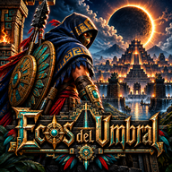

Ecos del Umbral
Juego de acción para Android · Android action game
Español. Eres Nómada, el único que volvió del Umbral. Explora Tenochtitlan, pelea contra los ecos con macuahuitl, átlatl y chimalli, y juega en línea con otros nómadas en el cooperativo y el PvP.
English. You are Nómada, the only one who came back from the Threshold. Explore Tenochtitlan, fight the echoes with macuahuitl, atlatl and chimalli, and play online with other nomads in co-op and PvP.
Política de privacidad · Privacy policy
Borrar tu cuenta · Delete your account
Contacto · Contact: juandegamers190127@gmail.com
© 2026 Juan Gonzalez